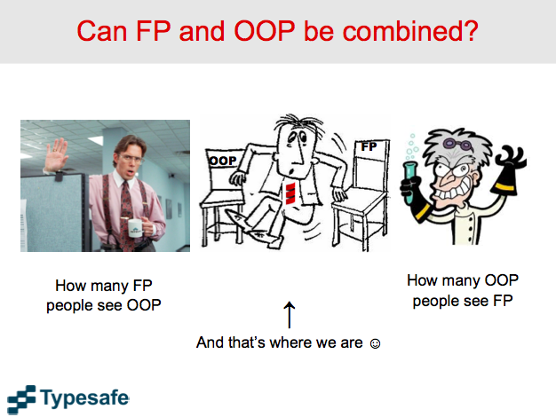
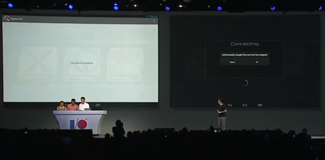

An Overview of Scala Programming Language
by Hung Lin @hunglin
Who is @hunglin?
- data handyman @ Audax Health
- have used Scala for 3 years
- DC Scala meetup co-organizer
Set the stage
- The gists of Scala
- My personal experience of Scala
- Hope to spark some good discussions
Basic Facts of Scala
- Created by Martin Odersky
- Scala means SCAlable LAnguage
- A JVM language
Demo.scala
object HelloWorld {
def main(args: Array[String]) {
println("Hello, world!")
}
}
The Gists of Scala (in my opinion)
Combination of OO and FP
Mix of Scripting and Enterprise Language
Encourage Type Safety

Encourage Immutability
FP and OO
Why FP
- Function is the most basic module
- Testable, composible, thus scalable
- Help/Force you to get to the essential part of the problem
Why OO
- Namespace/Modularity
- Good for fixed number of behaviors, but unlimited implementation - Expression Problem
Scripting v.s. Enterprise
Scripting Flavor: REPL, sbt, activator
Enterprise Flavor
- Type Safety
- running on JVM
Type Safety

Compiler is our best friend
Dare: change a variable name in PHP?
Invariance, Covariance, and Contravariance
// in Java
Object[] objectArray = new String[10]; // works
List<Object> objectList = new ArrayList<String>(); // compile error
// in Scala
trait PartialFunction[-A, +B]
Abstract Type Member
abstract class Buffer[+T] {
val element: T
}
abstract class Buffer {
type T
val element: T
}
A lot more
class Functor[F[_]]
trait Monad[M[_]] {
def pure[A](a: A): M[A]
def bind[A, B](ma: M[A], f: A => B): M[B]
}
Immutability
Key of Scalability
Actor Model
case class Greeting(who: String)
class GreetingActor extends Actor {
def receive = {
case Greeting(who) => println("Hello " + who)
}
}
val system = ActorSystem("MySystem")
val greeter = system.actorOf(Props[GreetingActor], name = "greeter")
greeter ! Greeting("Charlie Parker")
Criticism
JVM
Compile Time

Too Flexible
Too Powerful
Questions?